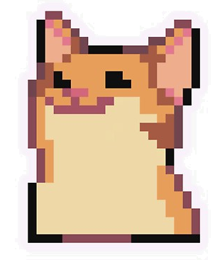
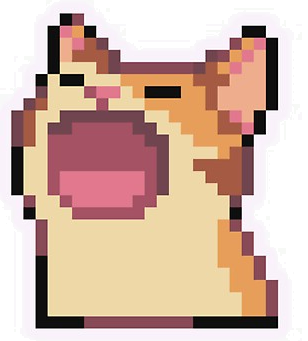
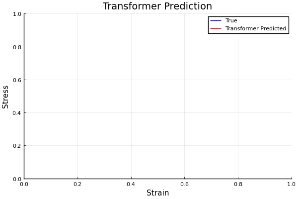
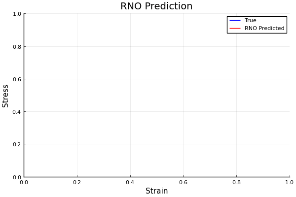
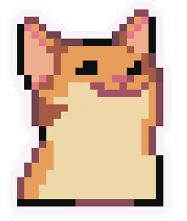
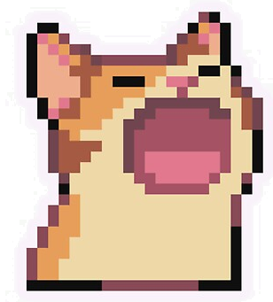
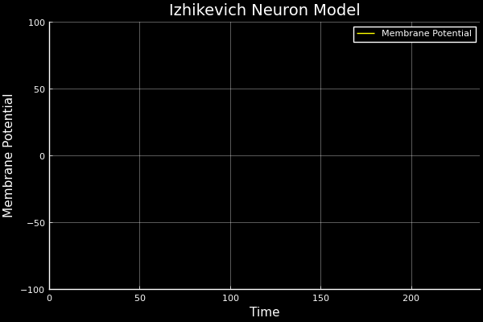

Building towards AI that's
- sustainable
- interpretable
- informed
- accessible
- standardised
KAEM: Kolmogorov-Arnold Energy Model
KAEM is a generative model built on the Kolmogorov-Arnold Representation theorem rather than perceptrons. Generative models typically trade off between inference speed, sample quality, and training stability, (they can usually only hit 2/3). KAEM juggles all three, is built for Zetta's hardware, and is a first step to realising my above 5 requirements.
Read the paper →Design Philosophies
I don't subscribe to perceptrons and pure scaling! Respect to the giants, but the principles below are how I'm pursuing my 5 requirements! They've shaped the hardware bets at Zetta and they will remain at the heat death of the final Delaware C-corp. Statistics victorious.


Representation first
Attention encodes very little inductive bias! Its weights are entirely data-driven. Flexible when abundant data is available, but it's wrong (all models are - George Box), and it fails on datasets where samples are limited or relationships lie on a complex manifold.
Bespoke models with stronger inductive biases are better in terms of training efficiency, generalisation, explainability, accuracy, data efficiency, etc. There is a better representation for natural language too, (it's a PDE system), we just don't know what it is yet, and that's a question that needs asking.
Darcy Flow
github ↗


Viscoelastic Materials
github ↗



Intelligence is Hierarchical
Real intelligence is hierarchical. Low-level, dumb control is handled by simple circuits in the central nervous system, (central pattern generators, CPGs). These make use of physical structure to handle unconscious, rhythmic signals for walking, flying, and swimming gaits, while freeing up the brain for higher-level control and decision making.
CPGs are quick to recover their oscillatory gaits with little feedback. They're analytically simple to design, tune, and implement, have robust transfer characteristics, and are utterly inexpensive compared to optimisation-based or data-driven control.
People are quick to default to fancy algorithms for everything, but the best engineers will always be looking for mechanical, analogue, or physically-informed solutions for their simplicity, reliability, and cost-effectiveness. Good mechanics can compensate for bad software. Good software will never be able to compensate for bad mechanics.


Reasoning under uncertainty
While there are cults arising in service of algorithms, the engineers know that data is where magic manifests! Uncertainty quantification is how engineers compensate where our data-driven methods fail, since we can't afford to be wrong.
Epistemic uncertainty is used to guide where we prioritise drug synthesis, experimentation, and risk assessments. Mistakes are expensive and unnecessary. Another example is a self-driving car that's 99% accurate. It still gets 1 in 100 decisions wrong. This could happen at a school crossing, and that last 1% is where uncertainty quantification saves lives.
Drug Solubility Fitting on AqSolDB
github ↗
Question the default
Diffusion models add noise until the distribution is flat, then learn to denoise. The forward process is an isotropic SDE, it doesn't preserve the structure of your target. Prior information about modes and geometry is gone by construction.
Annealing is an underexplored alternative. I propose using it to improving multimodal sampling for EBMs. High temperature MCMC chains explore global landscapes, colder ones resolve local structure, and global exchange passes information between them. The prior stays entirely intact, you're just smoothening the posterior energy landscape.
In KAEM, annealing is only applied during training. Power posteriors temper from prior to full posterior, and the thermodynamic criterion decomposes the true marginal likelihood across temperatures. No amortisation gap, no variational bound, just MCMC on a low-dimensional latent space, (where it's actually viable/affordable).
At inference time, the learned prior is sampled exactly via inverse transform, no annealing or MCMC involved. Diffusion pays its sequential cost at every generation, this pays it solely during training and scales in parallel with temperatures.
Parallel Tempering
github ↗